Sebesség
A sebesség nem más mint időegyseég alatt megtett távolság. Ha 1 m/s a sebesség akkor a tömegpont 1 sec alatt 1 métert tesz meg.
1 m/s = 3,6 km/h
Képlet: v = s
t
s - távolság (m)
t - idő (s)
Gyorsulás
A gyorsulás nem más, mint időegység alatti sebességváltozás.
Képlet: a = v
t
v - sebesség (m/s)
t - idő (s)
Szabadesés
A levegő ellenállása miatt igazán csak légüres térben lehetséges. (Newton cső) A szabadesés egyenletesen gyorsuló mozgás. A szabadon eső testnek másodpercenként 10 m/s-mal nő a sebesége.
Képlet: v = g * t
s = 0,5 * g * t2
g - nehézségi gyorsulás(gravitáció) (m/s2)
t - idő (s)
s - távolság (m)
Testek súlya
A tömeg sehol nem változik, csak a súly. Minden testet a föld egy bizinyos erővel vonz. Ezt az erőt nehézségi erőnek nevezzük, amelynek nagysága megegyezik a test súlyával.
Képlet: G = m * g
g - nehézségi gyorsulás(gravitáció) (m/s2)
m - tömeg (kg)
Mechanikai munka
Fizikai értelemben akkor beszélünk munkavégzésről, ha egy test erő hatására elmozdul.
Joule - 19. század - angol fizikus
Képlet: W = F * s
F - erő (N)
s - hossz (m)
Teljesítmény
A munkavégzés során fontos, hogy mennyi ideig tart a munkavégzés. A teljesítmény nem más mint időegység alatti munkavégzés.
Watt - 18. század - skót mechanikus, feltaláló
Képlet: P = W
t
W - munka (J)
t - idő (s)
Helyzeti energia
Ha egy m tömegű testet h magasságba felemelünk, akkor annak a testnek helyzeti energiája lesz.
Képlet: Ehelyzeti = Epotenciális = m * g * h
m - tömeg (kg)
g - gravitáció
h - magasság (m)
Mozgási energia
A mozgási enmergia függ a test tömegétől és a sebességétől.
Képlet: Emozgási = Ekinetikus = 0,5 * m * v2
m - tömeg (kg)
v - gyorsulás (m/s)
Newton gravitációs törvénye
A gravitációs erő egyenesen arányos a két test tömegének szorzatával és fordítva arányos a köztük lévő távolság négyzetével.
Ez a képlet azt jelenti, hogy minden test vonza egymást egyenlő nagyságú de ellentétes irányű erővel.
Képlet: Fg = Κ * m1 * m2
r 2
A világegyetemben ez az érték mindenhol ugyanaz.
F - gravitációs erő (N)
m - tömeg (kg)
r - távolság (m)
Impulzus
Az impulzus a tömeg és a sebesség szorzata.
Newton az "F = m * a"-t az impulzusból vezette le.
Képlet: p = m * v
F = p = m * v = m * a
t t
m - tömeg (kg)
v - sebesség (m/s)
F - erő (N)
t - idő (s)
a - gyorsulás (m/s2)
Forgatónyomaték
Az erő és az erőkar szorzata.
Képlet: M = F * r
F - erő (N)
r - erőkar (m)
Hőmérséklet mérése
A hőmérséklet mérése hőmérővel történik. A fizikában higanyhőmérőt használnak. Ha a hőmérőt melegítjük a higany térfogata tágul és a higany a csőben tágul.
A nálunk használatos hőmérőnek két alappontja van. A 0°C az olvadó jég hőmérséklete, a 100°C a forrásban lévő víz hőmérséklete. A celsius skálát egy svéd csillagászról nevezték el: Anders Celsius (1701-1744)
A világegyetemben előforduló hőmérséklet a -273,15°C. Azért nincs hidegebb, mert a részecskék nem mozognak, ezért nem termelődik belső energia.
-273,15°C = 0K
A K a Kelvinfokot jelenti. A K negatív nem lehet.
Test belső energiája
Minden test részecskéből épül fel (szilárd, folyékony, gáz). Ezek a részecskék állandóan rezegnek vagy mozognak. Ha a testeket melegítik a részecskék felgyorsulnak, mozgásuk megélénkül és ilyen esetben a test belső energiája nő. Abban az esetben ha a test hőmérséklete csökken, akkor a test belső energiája is csökken. A test belső energiája 0 sosem lehet.
Mértékegysége a Joulre (J).
Hővezetők és hőszigetelők
A hővezetés a szilárd anyagoknál fordul elő.
- Hővezetők: réz, alumínium, vas
- Félvezetők: kő, üveg, cserép, porcelán
- Hőszigetelők: gyapjú, toll, hungarocel, fa, fűrészpor, jég
Egy hótakaró védőhatása akkora, mint egy ugyanolyan vastag téglafalé.
Hőáramlás
A hőáramlás folyadékoknál és gázoknál jöhet létre. Ha a folyadékokat vagy gázokat melegítjük, akkor a térfogatuk megnő, sűrűségük csökken. Aminek kissebb a sűrűsége mindig feláramlik és helyére hideg kerül. Ezt nevezik hőáramlásnak.
Folyadékokra példa a radiátorokban a víz.
Gáznál a léggömb.
Képlet: ρ = m/V
m - tömeg (kg)
V - térfogat (m3)
Hősugárzás
Hideg téli napokon is érezzük a napnak a sugarát annak ellenére, hogy a környezetet nem melegíti fel. Ezt nevezzük hősugárzásnak.
Hőmennyiség
A belső energiaváltozást hőmennyiségnek nevezzük.
Képlet: Q = m * c * ΔT
m - tömeg (kg)
c - fajhő (J/kg°C)
ΔT - hőmérséklet változás (˚C)
Ha a test hőmérséklete nő pl.: melegítés, akkor a belső energiája is nő.
Ha a test hőmérséklete csökken pl.: hűtés, akkor a belső energiája is csökken.
Fajhő
A fajhő megmutatja, hogy 1kg anyag 1°C-al való melegítésekor vagy hűtésekor mennyivel növekszik vagy csökken a test belső energiája. Pl.: A víz fajhője 4200 J/kg°C vagy 4,2 kJ/kg°C
1kg víz (csak víznél 1l) 1°C-al való melegítésekor a víz belső energiája 4200 J-lal nő.
1kg víz (csak víznél 1l) 1°C-al való hűtésekor a víz belső energiája 4200 J-lal csökken.
Képlet: Q = m * c * ΔT
t = m1*c1*t1 + m2*c2*t2
m1*c1 + m2*c2
- Jég fajhője:2100 J/kg°C
- Vízgőz:2000 J/kg°C
- Alumínium:880 J/kg°C
- Acél:460 J/kg°C
- Réz:400 J/kg°C
Szilárd testek hőtágulása
Melegítés hatására a szilárd anyagok megnyúlnak pl.: vasúti sínek. Ilyen hosszúságváltozásokat figyelembe vesznek hidak építésekor is. A híd egyik végét rögzítik, a másik vége görgőkön nyugszik. Különféle anyagok különböző mértékben tágulnak melegedéskor. Ha 1m hosszú rudat 0°C-ról 100°C-ra melegítjük, akkor:
- réznél:1,7 mm-rel nőne
- vasnál:1,1 mm-rel nőne
- betonnál:1,1 mm-rel nőne
Ha egy rudat melegítünk, akkor a következő képlettel számolható ki a hosszúságváltozás.
Képlet: lt = lo(1+α*T)
lo - alap hossz (m)
α - hőtágulási egüttható
T - hőmérséklet változás (˚C)
Folyadékok hőtágulása
Melegítés hatására a folyadékok térfogata megnő. Különböző anyagok különböző képpen tágulnak. 1l(1000cm2) folyadék hőmérséklete ha 10°C-kal nő, akkor:
Képlet: Vt = Vo(1+β*ΔT)
lo - alap térfogat (l)
β - hőtágulási egüttható
ΔT - hőmérséklet változás (˚C)
- Alkohol:11 cm2-rel nő
- Petróleum:10 cm2-rel nő
- Higany:1,8 cm2-rel nő
- Víz:0,6 cm2-rel nő
Gázok hőtágulása
Melegítés hatására a gázok kitágulnak, viszont egyformán és egyenletesen. Ez azt jelenti, hogy a gázok hőtágulása független a gázok fajtájától.
Hatásfok
A hatásfok megmutatja, hogy a hasznos energiaváltozás a befektetett energiának hányad része, amit mindig százalékban fejeznek ki. A hatásfok mindig kisebb egynél, vagyis 100%-nál. Ez azt jelenti, hogy a befektetett energia 70%-a hasznos, 30% meg a veszteség.
Négyütemű benzinmotor hatásfoka kb. 30%, a dízelmotorok hatásfoka kb. 40%.
Képlet: Υ = hasznos energia
befektetett energia
Mértékegysége a Joule.
Halmazállapot változások
Három féle halmazállapotot fogunk vizsgálni:
- szilárd
- cseppfolyós
- légnemű
A jég, a víz és a vízgőz ugyanaz az anyag csak más halmazállapotban fordulnak elő. Szó lesz még a párolgásról és a szublimációról. Folyadékok hűtésekor fagyás következik be, ilyenkor a folyadékok megszilárdulnak. Melegítéskor a szilárd anyag folyadékka válik, ezt nevezzük olvadásnak. A folyadékoka felszínükön állandóan párolognak. Ilyenkor a folyadékoból légnemű anyag lesz. A folyadékok adott hőmérsékleten forrani kezdenek. Ilyenkor a folyadék belselyében megindul a buborékképződés. Légnemű anyagok hűtéskor folyékonnyá válnak. Ez a lecsapódás. Egyes szilárd anyagokazonnal légneművé válnak. Pl a naftin. Ezt szublimációnak nevezzük. Fordítottja a dér kialakulása.
Olvadás
Az olvadás szilárd anyagoknál meghatározott hőmérsékleten történik,
amely anyagonként változik. Ezt nevezzük az anyag olvadáspontjának.
ㅤ-Aluimínium:ㅤ660°C
ㅤ-Ezüst:ㅤㅤㅤㅤ960°C
ㅤ-Higany:ㅤㅤㅤ-68°C
ㅤ-Naftin:ㅤㅤㅤㅤ80°C
ㅤ-Cukor:ㅤㅤㅤㅤ160°C
ㅤ-Vas:ㅤㅤㅤㅤㅤ1535°C
ㅤ-Jég:ㅤㅤㅤㅤㅤㅤ0°C
Az a mennyiség amely megmutatja, hogy 1kg tömegű anyag megolvadáskor
mennyivel nő a belső energiája, olvadáshőnek nevezzük.
Jele: Lo
Képlet: ΔE = Lo * m
Mértékegység: J/kg
ㅤ-Alumínium:ㅤ390 000 J/kg
ㅤ-Arany:ㅤㅤㅤ65 000 J/kg
ㅤ-Cukor:ㅤㅤㅤ60 000 J/kg
ㅤ-Jég:ㅤㅤㅤㅤ340 000 J/kg
A jég olvadáshőkje azt jelenti, hogy 1kg jég megolvadásához 340 000 J/kg
energia szükséges.
Fagyás
A fagyás cseppfolyós anyagoknál meghatározott hőmérsékleten történik.
Ez anyagonként különböző. Ez az anyag fagypontja. Ugyanazon anyag
fagyás és olvadáspontja megegyezik. Az a mennyiség amely megmutatja,
hogy 1kg anyag megfagyásakor mennyivel csökken a test belső energiája,
fagyáshőnek nevezzük. Ügyanazon anyag olvadás és fagyáshője megegyezik.
Jele: Lo
Képlet: ΔE = Lo * m
Mértékegység: J/kg
Fagyáskor a test térfogata csökken, sűrűsége nő.
! Viszont a víz kivétel. Ezt nevezzük a víz anomáliájának. !
Télen a vízcsövekben fagyáskor a jég térfogata megnő, ez szétrepeszti a
csöveket.
Fagyáskor a jég sűrűsége csökken. Ezért úszik a jég a vizen.
Forrás
Az a hőmérséklet amelyen a folyadék forrni kezd, forrráspontnak nevezzük.
Forráskor a felszínen és a folyadék belselyében is megindul a ggőzképzés.
Különböző anyagok forráspontja különböző. Forráspontot elérve a folyadék
hőmérséklete nem emelkedik tovább.
Néhány anyag forráspontja:
ㅤ-Víz:ㅤㅤㅤ100°C
ㅤ-Aceton:ㅤㅤ56°C
ㅤ-Higany:ㅤㅤ356°C
ㅤ-Kénsav:ㅤㅤ337°C
Az a mennyiség amely megmutatja, hogy 1kg tömegű anyag elforrásakor
mennyivel nő a belső energia, forráshőnek nevezzük.
Jele: Lf
Képlet: ΔE = Lf * m
Mértékegység: J/kg
Néhány anyag forráshője:
ㅤ-Víz:ㅤㅤㅤ2260 kJ/kg
ㅤ-Aceton:ㅤㅤ124 kJ/kg
ㅤ-Higany:ㅤㅤ287 kJ/kg
ㅤ-Kénsav:ㅤㅤ553 kJ/kg
Egy folyadék forráspontja mindig függ a nyomástól. Ahol nagyobb a nyomás,
nagyobb a forráspont. Pl a kuktában nagyobb a nyomás mint a külső és 100°C
felett forr a víz.
Kis nyomáson pl hegyekben 100°C alatt forr a víz.
Párolgás
Minden folyadék, minden hőmérsékleten párolog. Párolgáskor a részecskék
hagyják el a folyadékot. Ezért a megmaradt folyadék belső energiája csökken.
(Nyáron ha kijössz a medencéből bármennyire süt a nap fázni fogsz.)
Párolgáskor a folyékony halmazállapotból légnemű halmazállapot lesz.
A párolgás sebessége 4 dologtól függ:
ㅤ-anyag fajtájától (alkohol gyorsabban párolog mint a víz)
ㅤ-párolgó felület nagyságától (teregetés)
ㅤ-hőmérséklettől (nyáron előbb szárad)
ㅤ-környezet páratartalmától
Lecsapódás
Főzéskor a konyhaablak bepárásodik, fürdéskor a levegőben lévő vízgőz a
hideg csempén lecsapódik, folyadékká válik.
A lecsapódás a párolgás fordítottja.
A lecsapódott vízgőz belső energiája csökken.
A lecsapódás játszik szerepet a felhőképződésben is:
ㅤㅤA földön található víz párolog és a magasban ahol hideg van lecsapódik
ㅤㅤés vízcseppekké áll össze, a vízcseppekből felhő lesz. Egy felhő minél
ㅤㅤszürkébb, annál valószínűbb hogy esni fog.
Köd
A köd a föld felszínén kialakult felhő. A köd a levegő lehűlésekor jön létre. Ilyenkor a látótávolság 1km alá csökken. Ha 1km-nél messzebb ellátunk, akkor azt mondjuk, hogy a levegő párás.
Talajmenti csapadék
A talajmenti csapadék is lehűléssel alakul ki, amikor a földfelszín hűl le, akkor alakul ki a harmat, a dér és a zúzmara.
Harmatpont
Amikor egy köbméter levegőben annyi vízgőz van, hogy többet nem képes befogadni,
akkor azt mondják, hogy a levegő telített.
Ezt a hőmérsékleti értéket harmatpontnak nevezzük.
Légnedvesség páratartalom
A légkörben vízgőz található, amely anedvességet okozza.
Tökéletesen száraz, vízgőzt nem tartalmazó helyek a sivatagok, itt a nedvesség 0%.
Ha a vízzel a levegő teljesen telítve van, akkor a légnedvesség 100% mint az esőerdők.
Zárt helységekben az a legjobb, ha a hőmérrséklet 20°C és a légnedvesség 50%.
A légnedvességet légnedvességmérővel vagy higrométerrel mérik.
A víz hármaspontja
611 Pascal nyomáson a víz olvadás és forráspontja is 0,01°C. Ez a víz hármaspontja.
A jég, a víz és a vízgőz egyensúly állapotba kerül.
Felületi feszültség
Ha a víz felszínére óvatosan varrótűt vagy gilette pengét teszünk, akkor azt tapasztaljuk,
hogy a folyadék felszíne kissé behorpad, mint ha a víz felszíne rugalmas lenne. A folyadék
szabad felszíne olyan, mint egy rugalmas hártya, aminek vastagsága mikrométer vagy nanométer
nagyságú.
(mikerométer = 10-6 m, nanométer = 10-9 m)

Kapilláris jelenségek
Tapasztalat szerint a nyugvó folyadékok és az edény fala között homorú, illetve dombotú alakú
lehet a folyadék, ahogyan a képen is látszik.
A víz (H2O) az üveg esetén nedvesítő folyadék.
A higany (Hg) az üveg esetén nem nedvesítő folyadék.
Hajszálcsövesség
A hajszálcsövet más néven kapillárisnak is nevezzük. 1-2 mm átmérőjű csöveket kapillárisnak nevezzük.
A víz a kapilláris csőben mindig felemelkedik. A kapiláris jelenségek fordulnak elő a természetben.
Így jutnak vízhez a növények, fák, bokrok. Illetve ha a házak nincsenek jól szigetelve,
a falakba feljut a víz és bepenészesedik.
Erre a jelenségre szintén a képen látunk példát.
Folyadékok és gázok mechanikája
Pascal elve
Pascal - 17.szㅤㅤfrancia matematikus, fizikus, filozófus
A nyomást a felületre merőlegesen ható nyomóerővel definiáljuk.
A nyomás egyenesen arányos a nyomóerővel (F) és fordítva a felülettel (A).
Egy pascal a nyomás akkor, ha 1m2 területre, merőlegesen 1 N erő hat.
Jele: p
Képlet: p = F/A
Mértékegység: [p] = N/m2 = Pa
Hidraulikus berendezések

F1/A1 = F2/A2
Hidrosztatikai nyomás
A hidrosztatikai nyomás nem más, mint a folyadék súlyából származó nyomás.
Jele: p
Képlet: p = F/A = m * a/A
Mértékegység: N/m
Archimédesz törvénye
Ke. 2. század - ógörög matematikus, fizikus és filozófus
Minden folyadékba merülő testre felhajtóerő hat, amely az általa kiszorított
folyadék súlyával egyenlő nagyságú, de ellentétes irányú.
A test sűrűsége alapján három esetet különböztetünk meg:
ㅤ-ha a test sűrűsége nagyobb, mint a folyadéké akkor a test elmerül
ㅤ-ha a test sűrűsége megegyezik a folyadékkal, akkor a test lebeg a vízben
ㅤ-ha a test sűrűsége kissebb, mint a folyadéké akkor a test úszik a folyadékon
Úszás esetén a felhajtóerő pont ugyanakkora, mint a test súlya levegőn.
Jele: F
Képlet: Ffel = G → Vtest * ρfoly * q
Mértékegység: N

Atmoszdférikus nyomás(légnyomás)
A levegő súlyátúl származó nyomást atmoszférikus nyomásnak nevezzük.
17. század - olasz fizikus Torricelli mérte meg először a légnyomást.
1 m hosszú csövek egyik vége be volt forrasztva, a másik része nyitva volt.
Teletöltötte higannyal, majd a nyitott szájával egy higanytálba tette.
1atm = 760 Hgmm
1atm ≈ 1 bar ≈ 100 000 Pa
Kiszámítható, hogy az atmoszférikus nyomás 10 m-es vízoszlop nyomásával egyenlő.
Kiszámítható, hogy a vízben a hidrosztatikus nyomás méterenként 10 kPa-lal nő.
Hasonlóképpen kiszámolható, hogy kis magasságokban 100 méterenként 11 hPa-lal csökken a légnyomás.
11 hPa = 1100 Pa
5500 m magasan a legnyomás a fele a tengerszintinek (50 000 Pa).
A fülben a dobhártya nyomáskülönbség hatására kétféleképpen sérülhet:
ㅤ-beszakad (nyomás növekedés)
ㅤ-kiszakad (nyomás csökkenés)
Légnyomáson alapuló berendezések
Laboratóriumokban higanyos légnyomásmérőt használnak.
Légnyomás mérésére használják még az aneroidát is.
Meteorológiai állomásokon légnyomás mérésére barográfot használnak.
A vérnyomásmérők is nyomáskülönbségen alapulnak.
A kart körülvevő párnát addig kell levegővel pumpálni amíg a vér keringése a karban megszűnik.
Ekkor leolvassák a levegő nyomását és az egyenlő a vér nyomásával.
A föld légkörének felhajtóereje
Archimédesz törvénye nem csak folyadékokra de gázokra is érvényes.
Ennek hatására emelkedik a léghajó / léggömb.
Gázoknál a felhajtóeerő egyenlő a test által kiszorított gáz súlyával.
Jele: F
Képlet: Ffelhajtóerő = Vtest * ρgáz * q
Mértékegység: N
ρgáz = ρlevegő = 1,29 kg/m2
Ha a test súlya:
ㅤ-kisebb a felhajtóerőnél, akkor a test felemelkedik
ㅤ-egyenlő a felhajtóerővel, akkor a test lebeg
ㅤ-nagyobb a felhajtóerőnél, akkor a test lesüllyed
A leggömböket a levegőnél könnyebb gázzal töltik (H, He).
A vákumban a testekre felhajtóerő nem hat.
Áramló közeg mechanikája

A folytonossági (kontinuitási) egyenlet
Ha a keresztmetszet csökken, akkor az áramlás sebessége növekszik.
Ez azt jelenti, hogy A1 * v1 = A2 * v2
Nyomási energia

A nyomással rendelkező víz munkát végez, szóval energiája van.
Ezt az energiát nyomási energiának nevezzük.
A végzett munkát a folyadék nyomásának és a csőben áramló folyadék terfogat
változásának szorzata adja.
Jele: W
Képlet: W = F * s
ㅤㅤㅤW = p * V
Bernoulli egyenlete

18. század - svájci matematikus, fizikus
Az áramló folyadék sebessége és nyomása közti összefüggést állapította meg.
Azt állapította meg, hogy ha növekszik a sebesség akkor a nyomás csökken.
Ezt nevezzük hidrodinamikai vagy aerodinamikai paradoxonnak.
Befúváskor megnövekszik a levegőáram sebessége, így lecsökken a nyomás.
A külső nyomás azonban változatlan marad (a bentinél nagyobb), ezért összenyomja a két papírlapot.
A közegellenállás

Közegellenállásnak nevezzük azt az erőt, amely a test és az áramló közeg kölcsönhatásából származik.
A repülés elve
A repülőgép szárnya asszimetrikus. Ennek következtében a szárny felett áramló levegősebessége nő → a nyomás csökken. A szárny alatt a nyomás marad. Akkor repül, ha a
felhajtóerő nagyobb, mint a gép súlya.
Bernoulli törvénye az adott közegben mért hangsebességhez közeli, vagy azt meghaladó
sebességeknél érvényét veszti.
Az elektromos tér
Alapfogalmak
Ha egy műanyag vonalzót gyapjúdarabbal dörzsölünk, feltöltődik és magához
vonzza a papírszeleteket.
Fésülködéskor a fésű vonzza a száraz hajszálakat.
Minden atom magja pozitív töltésű protonokból és töltés nélküli neutronokból
áll. Az atommagot körülvevő elektronburokban negatív töltésű elektronok találhatók.
Normális körülmények között a protonok száma egyenlő az elektronok
számával – az atom kifelé semleges.
Elektron – görög szó, jelentése borostyánkő
Elektrontöbblet – negatív töltés (negatív ion)
Elektronhiány – pozitív töltés (pozitív ion)
Ion – elektromos töltéssel rendelkező részecske
pl: konyhasó
ㅤNa+Cl-
ㅤ↑ㅤㅤ↑
pozitívㅤnegatív
Az elemi töltés a természetben előforduló legkisebb töltés.
Protonnál pozitív, elektronnál negatív.
ㅤ𝒆 = 1,6 · 10-19 C
ㅤ↑ㅤㅤㅤㅤㅤㅤ↑
elemiㅤㅤㅤㅤㅤㅤCoulumb
töltésㅤㅤㅤㅤㅤtöltés egysége
Coulomb - 18. század - francia fizikus
Róla nevezték el az elektromos töltés egységét.

Felektromos = k * Q1 * Q2
ㅤㅤㅤㅤ ㅤㅤ ㅤr2
F = erő (N)
k = állandóㅤㅤérték = 9 * 109 Nm2C-2
Q = töltés (C - Coulomb)
r = távolság (m)
A Coulomb törvény kimondja, hogy egymástól bizonyos távolságra elhelyezett két
töltés között mekkora lesz a vonzó illetve taszitó erő.
Elektromos térerősség

Az elektromos térerősség, vagy másnéven intenzitás az elektromos erő és a
töltés hányadosaként definiálható.
E = F =k * Q
ㅤ Q ㅤ r2
E = térerősség (N/C)
F = erő (N)
Q = töltés (C)
k = állandóㅤㅤérték = 9 * 109 Nm2C-2
r = távolság (m)
Az erő vektormennyiség. Van nagysága és iránya, ezért az elektromos térerő is
vektormennyiség. Megállapodás szerint a pozitív töltésnél az elektromos
térerősség kifelé mutat, negatív töltésnél befelé mutat.
Elektromos tér

Az elektromos tér elektromos erővel mozgatja az elektronokat egy bizonyos
úton. Ekkor az elektromos tér munkát végez.
Az elektromos munka az erő és az elmozdulás szorzata.
W = E * Q * d
W = munka (J - joule)
E = térerősség (N/C)
Q = töltés (C)
d = távolság (m)
Elektromos munkánál "s" helyett "d"-t írunk.
Elektromos potenciál
Volta - 18. század - olasz fizikus
Az elektromos potenciál az elektromos energia és a töltés hányadosa.
φe = W = Q * E * d = E * d
ㅤ ㅤQㅤㅤㅤQ
W = munka (J)
φ = térerősség (N/C)
Q = töltés (C)
d = távolság (m)
Elektromos feszültség
Az elektromos feszültség nem más mint potenciál különbség.
U = E * d
U = feszültség (V - volt)
E = térerősség (N/C)
d = távolság (m)
Millikan kísérlete

Millikan - 20. század - amerikai fizikus
2 vízszintes lap köré olajcseppet helyezett. A lapok között elektromos tér volt.
Az olajcsepp a levegőből pozitív töltést vett fel és a lapok között akkor volt
egyensúlyban, amikor az elektromos erő és a gravitációs erő egyenlő volt.
Olajcsepp akkor lesz egyensúlyban, ha
ㅤㅤㅤFelektromos = Fgravitációs
ㅤㅤㅤㅤㅤE * Q = m * g
ㅤ ㅤ ㅤ ㅤQ * U = m * g
ㅤㅤㅤ ㅤ ㅤㅤd
ㅤㅤ ㅤ ㅤㅤㅤQ = m * g * d
ㅤㅤ ㅤ ㅤㅤㅤㅤ ㅤ ㅤU
Q = töltés (C)
m = tömeg (kg)
g = gravitáció (N/kg)
d = távolság (m)
U = feszültség (V)
Ezzel a kísérlettel azt állapította meg, hogy az elektromos töltések nagysága nem
folytonos, hanem csak bizonyos értékeket vehet fel, méghozzá az elemi töltés egész számú többszöröseit.
1 = 1,6 * 10-19C
2 * 1,6 * 10-19C
3 * 1,6 * 10-19C
Az olajcsepp egyensúlya csak a feszültség érékétől függött és ebből jött rá, hogy
egész számú többszörösként fordul elő az elemi töltés.
Kapacitás
Faraday - 19. század - angol fizikus
A kapacitás azt határozza meg, hogy egy testet mennyire sikerült töltéssel feltöltenünk.
Mivel az 1C töltés kb. 1019db elektron töltésnek felel meg, ezért az F kisebb értékét használjuk.
mF = 10-3F
uF = 10-6F
nF = 10-9F
pF = 10-12F
C = Q
ㅤ U
C = kapacitás (F - farad)
Q = töltés (C)
U = feszültség (V)
Kondenzátorok
Két egymástól szigetelővel ellátott fémlemezt kondenzátornak nevezzük.
A szigetelőanyag lehet papír, olaj, kerámia, levegő. A kondenzátor a töltések tárolására szolgál,
például a fényképezőgép vakuja, amely először feltöltődik, majd az összegyűlt enegiát fény formájában adja ki.
A kondenzátorok légegyszerűbb fajtája a lemezes kondenzátor.
A lemezes kondenzátor kapacitása függ a lemezek felületétől,
a köztük lévő távolságtól és a szigetelétől.
C
C = 𝜺o * A
ㅤㅤㅤd
C = kapacitás (F)
𝜺 = epszilon ㅤㅤérték = 8,856*10-12
A = felület (m2)
d = távolság (m)
Kondenzátorok energiája
A feltöltött kondenzátor energiája függ a kapacitástól és a feszültség négyzetétől.
E = 0.5 * C * U2
E = energia (J)
C = kapacitás (F)
U = feszültség (V)
Kondenzátorok kapcsolása
A kondenzátorokat két féle képpen kapcsolhatjuk. Sorosan és párhuzamosan.
PÁRHUZAMOS

Párhuzamos kapcsolás esetén az eredő kapacitás az egyes kapacitások összege.
C1 = 1nF
C2 = 2nF
C3 = 40nF
Ceredő = C1 + C2 + C3
Ceredő = 1nF + 2nF + 40nF = 43nF
SOROS

Soros kapcsolásnál az eredő kapacitás reciproka egyenlő az
egyes kapacitások reciprokainak összegével.
1 ㅤ=ㅤ 1 + 1 + 1
Ceredő C1 C2 C3
1 ㅤ=ㅤ 1 ㅤ+ㅤ 1 ㅤ+ㅤ 1 ㅤ=ㅤ40 + 20 + 1ㅤ=ㅤ 61
Ceredő 1nF ㅤ 2nF ㅤ 40nFㅤㅤㅤㅤ40nFㅤ ㅤㅤㅤ41
1 ㅤ=ㅤ 40 ㅤ= 0,6557nF
Ceredő 61nF
C = kapacitás (F)
Vezetők és szigetelők
Az anyagok elektromos szempontból 2 csoportba oszthatók:
ㅤ-vezetők
ㅤ-szigetelők
Azok az anyagok amelyek töltéshordozókat tartalmaznak (elektronokat vagy ionokat) elektromos vezetőnek nevezzük.
ㅤ- a fémek (pl.: alumínium, réz, vas) szabad elektronokat tartalmaznak és ezek
ㅤㅤmozgása hozza létre az elektromos áramot
ㅤ- a folyadékokban a pozitív és negatív ionok mozgása hozza létre az elektromos
ㅤㅤáramot (pl.: sós víz)
ㅤ- gázokban (pl.: villámlás) az áramot az ionok és elektronok hozzák létre
Másik csoportba tartoznak az elektromos szigetelőanyagok (pl.: üveg, porcelán, fa, műanyagok)
ezekben az anyagokban minimális mozgásképes töltéshordozók vannak vagy nincsenek.
A szelén, a germánium és a szilícium félvezetők, ezért a vezetők és szigetelők között vannak.
Az elektromos áram keletkezése
Egyenáram
Ha egy zseblámpa elem két végéhez izzólámpát kapcsolunk, akkor a lámpa világít. Ennek az az
oka, hogy a töltéshordozók rendezett irányú mozgást végeznek. Az elektronok mindig a negatív
pólustól a pozitív pólus felé mozognak, de megállapodás alapján fordítva jelöljük.

Az áramerősség
Az áramerősség nem más, mint időegység alatt áthaladó töltések száma.
I = Q
ㅤ t
I = áram (A - amper)
Q = töltés (C)
t = idő (s)
Ohm törvénye
Ohm - 18-19. század - német fizikus
Kísérletileg igazolta, hogy a feszültség az árammal egyenesen arányos.
Mindig a feszültség hozza létre az áramot, nem pedig fordítva.
U ~ I
~ = egyenesen arányos
U = R * I
U = feszültség (V)
I = áram (A)
R = ellenállás (Ω - Ohm)
Az U=R*I kápletben az R-t elektromos ellenállásnak nevezzük.
1 Ohm a vezető ellenállása akkor, ha 1 V feszültség 1 A áramot hoz létre.
Az elektromos ellenállás azt határozza meg, hogy feszültség hatására a töltéshordozók
redezett mozgását a vezető belső anyagszerkezete hogyan fékezi.
Ezt a folyamatot rezisztenciának nevezzük.
Minden fogyasztó, illetve vezető ohmos ellenállásnak tekinthető.
R = ρ * l
ㅤㅤ ㅤA
ρ = fajlagos ellenállás (Ωmm/m)
l = vezeték hossza (m)
A = vezeték keresztmetszete (mm2)
R = ellenállás (Ω)
Az elektromos ellenállás a fémhuzal anyagi minőségétől és méretétől függ.
R = R0(1 + a * Δt)
R = t hőmérséklete mint ellenállás (Ω)
R0 = t0 hőmérséklete mint ellenállás (Ω)
Δt = hőmérséklet
a = hőtágulási együttható (°C-1)
Az ellenállások kapcsolása
SOROS

Eredő ellenállás
Reredő = R1 + R2 + R3
I = U
ㅤ Reredő
U = U1 * U2 * U3
U1 = R1 * I
U2 = R2 * I
U3 = R3 * I
PÁRHUZAMOS

Eredő ellenállás
1 = 1 + 1 + 1
Reredő R1 R2 R3
U = Reredő * I
I = I1 + I2 + I3
I1 = U
ㅤㅤR1
I2 = U
ㅤㅤR2
I3 = U
ㅤㅤR3
U = feszültség (V)
I = áram (A)
R = ellenállás (Ω - Ohm)
Mérőműszerek kapcsolása
Az áramerősség mérésére ampmérőt használunk. Az ampmérő az áramkörbe mindig SOROSAN kötjük be a fogyasztóhoz képest.

A feszültség mérésére voltmérőt használunk. A voltmérőt mindig PÁRHUZAMOSAN kapcsoljuk be a fogyasztóhoz képest.

Elektromos munkavégzés és teljesítmény
Az elektromos munkát úgy számítjuk ki, hogy a feszültséget, az áramot és az időt összehasonlítjuk.W = U * I * t
W = elktromos munka (J)
U = feszültség (V)
I = áram (A)
t = idő (s)
Ohm törvénye alapján különböző képletek írhatóak fel.
ㅤU = R * I
ㅤW = U * I * t = R * I * I * t = R * I2 * t
ㅤW = R * I2 * t
ㅤI = U
ㅤㅤ R
ㅤW = U * I * t = U * U * t = U2 * t
ㅤㅤㅤㅤㅤㅤㅤㅤㅤ Rㅤㅤㅤ R
ㅤW = U2 * t
ㅤㅤㅤ R
A teljesítményt úgy számoljuk ki, hogy a munkát elosztjuk az idővel.
p = W
ㅤㅤ t
p = teljesítmény (W)
W = munka (J)
t = idő (s)
p = U * I
p = R * I2
p = U2
ㅤㅤ R
Áram hatására a vezetők felmelegednek és amennyiben más energiaátalakító nincs
az elektromos energia hővé alakul át. Ezt Joule hővel mérjük.
elektromosㅤ=ㅤJoule
munkaㅤㅤㅤㅤㅤhő
ㅤ U * I * tㅤ=ㅤm * c * ΔT
U = feszültség (V)ㅤ ㅤm = tömeg (kg)
I = áram (A)ㅤㅤㅤㅤㅤ c = fajhő (J/kg°C)
t = idő (s)ㅤㅤㅤㅤㅤ ΔT = hőmérsékletkülönbség (°C)
Az elektromos áram vegyi hatásai
Az elektromos áram elektrolitokban
Sók, savak, bázisok vizes oldatait elektrolitoknak nevezzük.
Elektrolitokban az elektromos áramot az ionok létesítik.
Faraday törvényei
Faraday - 19. század - angol fizikus1. törvény:
Az elektrolitokból kiváló anyag tömege egyenesen arányos az áramerősséggel, illetve töltéssel:
m = k * I * t = k * Q
m = tömeg (kg)
k = elektromossági egyenérték
I = áram (A)
t = idő (s)
Q = töltés (C)
A képletekben szereplő k az elektrolízis folyamán kiváló anyagtól függő állandó, az úgynevezett elektrokémiai egyenérték.
2. törvény:
1 mol egyszeres töltésű ion semlegesítéséhez 96 500 C töltésre van szükség:
Q
n
Elektrolízis segítségével tárgyakat fémekkel lehet bevonni:
nikkelezés, krómozás, aranyozás illetve ezüstözés
Az elektromos áramvezetés gázokban és vákumban
A villám
A villám elektromos önálló gázkisülés, amely a felhők vagy a talaj és felhők között jön létre.
- síkvillám (talaj és felhő)
- felületi villám (felhő és felhő)
- gömbvillám (örvénylő elektromágneses tér)
Keletkezésük a felhők vizcseppjeinek, jégkristályainak súrlódására, széttöredezésére vezethető vissza.
Legegyszerűbb és leggyakoribban megfigyelhető fajtája a síkvillám.
Általában többször lecsap, gyors egymásutánban - a lefényképezett rekord 42-szöre egy ugyanazon csatornán.
Nem célszerű villámláskor magas fák vagy csúcsban végződő épületek alá állni.
v = 340 m/s vagyis 3 másodpercenként 1 km-et tesz meg a hang.
Elektromos áramvezetés ritkított gázokban
Ha nagyfeszültségű áramfkrráshoz üvegcsövet kötünk, akkor a csőben fényjelenséget tapasztalunk.
Az így keletkezett fény színe a gáz fajtájától függ.
A világítóberendezések használják pl.: neoncső, reklámcső.
Katódsugárzás
A katód felületéről nagy feszültség hatására katód sugarak inulnak ki, amelyek valójában elektronokból állnak.
Két fajtáját ismerjük:
ㅤ-foszforeszkálás pl.: órák
ㅤ-fluoreszkálás pl.: kilóméterkövek
A régi tévé készülékekben voltak katódsugár csövek és a régi rádiókészülékekben.
Mágnesesség
Mágneses tér
Egy szabadon forgó mágnes mindig észak-dél irányba állapodik meg.
Ez azért van így, mert a föld egy nagy mágnes.

Körülbelül 1500 km köztük a különbség.
A természetben előforduló mágnest permanens mágnesnek nevezzük. Más néven állandó mágnes.
A mágnes a nevét a természetben előforduló magnetit ásványról kapta.
Ha egy mágnest feldarabolunk apró részekre, akkor minden egyes új résznek lesz északi és déli pólusa.
A mágnesek körüli teret indukció vonalakkal szemléltetjük.
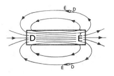
Oersted kísérlete
Oersted - 18-19. század - dán fizikus
Az áramjárta vezető körül az irányító kibillen egyensúlyhelyzetéből.
Ez azért van, mert az áramjárta vezető körül mágneses tér alakul ki.
A mágneses erővonalak - indukcióvonalak
A mágneses tér grafikus ábrázolására szolgáló görbéket indukcióvonalaknak nevezzük.
Az indukcióvonalakat vasreszelék segítségével tudjuk láthatóvá tenni.
Amper-féle jobbkézszabály
Ha a vezetőt jobb kezünkkel úgy fogjuk be, hogy kifeszített hüvelykujjunk az áram irányába mutasson, akkor behajlított ujjaink a mágneses indukcióvonalak irányát mutatják.
A mágneses indukció
A mágneses teret egy új fizikai mennyiséggel jellemezzük. Ez a mágneses indukció. Az indukció jele: B és egysége a: Tesla
Homogén mágneses térben az áramvezetőre ható mágneses erő nagysága egyenesen arányos a mágneses indukcióval, az áramerősséggel, a vezető aktív hosszával és annak térbeli helyzetével.
F = B * I * l * sin α
F = erő (N)
B = mágneses indukció (Tesla)
I = áram (A)
l = hossz (m)
sin α = alfa szög
Tesla - 19-20. század - délszláv származású Amerikában élt elektrotechnikus
A mágneses indukcióvektormennyiség iránya megegyezik az indukcióvonalakhoz húzott érintő vonalával.
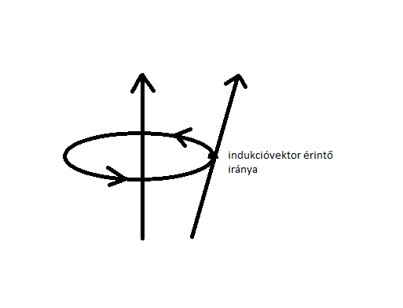Ampér törvénye
Homogén mágneses térben két egyenes, párhuzamos vezető között fellépő mágneses erő nagysága egyenesen arányos az áramerősségek szorzatával, illetve a vezetők hosszával, és fordítva a köztük lévő távolsággal.
Fm=k * I1 * I2 * l
ㅤㅤㅤㅤ d
k = μ
ㅤ 2𝝅
l = vezeték hossza (m)
d = vezeték közötti távolság (m)
k = mágneses állandó
μ = permeabilitás (A)
𝝅 = pí
Három féle permabilitás létezik
μ = közeg
μ0 = vákumㅤㅤμ0 = 4*𝝅*10-7NA-2
μr = relatív
μr (levegő) = 1
Az áramerősség egységének a definíciója
1 Amper az áramerősség akkor, ha két párhuzamos vezetőben amelyik egymástól 1 m távolságra vannak vákumban vagy levegőn, a köztük lévő vonzóerő vagy taszítóerő 2*10-7N.
A már ismert mágneses erő képleteiből meghatározható csak a mágneses indukció.
Fm = B * I * l
Fm = k * I1*I2 * l
ㅤㅤㅤ ㅤd
B * I * l = k * I1 * I2 * l
ㅤㅤ ㅤㅤㅤㅤd
B = k * I ㅤ= μ * I
ㅤㅤ dㅤㅤㅤ𝝅ㅤd
B = μ * I
ㅤㅤ2𝝅 * d
A mágneses indukció egyensen arányos az áramerősséggel és fordítva a vezetőtől mért távolságtól.
Vákum esetén a képlet így néz ki:
B = μ0 * I
ㅤㅤ2𝝅 * d
μ0 = 4*𝝅*10-7NA-2
A tekercs mágneses tere
A hosszú, henger alakú tekercset szolenoid tekercsnek hívják.
A benne lévő mágneses tér indukciója:
B = μ * N * I
l
l = tekercs hossza (m)
N = menetszám
μ = permeabilitás (A)
Töltéssel rendelkező részecske mágneses térben
A mágneses tér nem csak a vezetőre, hanem a benne mozgó szabad elektronokra is hatást gyakorol.
A mágneses erőre használt két képletből az Fm= B * I * l * sin α képletre lesz szükségünk.
Fm= B * I * l * sin α
I = Q ㅤㅤl = v * t
ㅤ t
Fm= B * Q * v * t * sin α
ㅤㅤㅤㅤ t
Fm= B * v * Q * sin α
Fm= B * e * v * sin α
Lorentz szerint, ha egy részecske egyidejüleg elektromos és mágneses térben is mozog, akkor a rá ható erő: FL = Fe + Fm
FL - Lorentz erő
Fe - elektromos erő
Fm - mágneses erő
Lorentz - 19-20. század - Nóbel-díjas holland fizikus
Az anyagok mágneses tulajdonságai
Az anyagokat három csoportba osztjuk:
- diamágneses
- paramágneses
- ferromágneses
- Diamágneses anyagok: üveg, víz
- Paramágneses anyagok: alumínium, szilícium
- Ferromágneses anyagok: vas, kobalt
Felfüggesztéskor az ilyen anyagok diametrálisan (átlósan) állnak be az indukcióvonalakra.
μr < 1
Felfüggesztéskor az ilyen anyagok parallel (párhuzamos) állnak be az indukcióvonalakra.
μr > 1
Azokat az anyagokat, amelyek szemmel láthatóan reagálnak a mágnes közelítésére, ferromágneses anyagoknak nevezzük. Ezeknek az anyagoknak a relatív permabilitásuk nagy.
μr >> 1 (102-105 nagyságrendű)
A ferromágneses anyagok bizonyos hőmérséklet felett elveszítik ferromágneses tulajdonságaikat. Ezt az anyagonként változó hőmérsékletet Curie-pontnak nevezzük.
Curie - 19-20. század - Nóbel-díjas francia fizikus
A Curie-pont felett a ferromágneses anyagok paramágneses anyagokká válnak.
A mágneses térerősség
H = N * I
ㅤㅤ ㅤl
H - mágneses térerősség/gerjesztettség (A/m)
N - menetszám
I - áramerősség (A)
l - tekercs hossza (m)
A mágneses térerősség egy vektormennyiség. Indukcióvonalakkal szemléltetjük. Iránya megegyezik a mágneses indukció irányával.
A mágneses indukciófluxus
Φ = B * A
Φ - mágneses indukciófluxus (Wb - Weber)
A - felület (m2)
B - mágneses indukció (T)
Weber - 19. század - német fizikus
1 Wb a mágneses indukciófluxus, ha 1 m2 felületre 1 T indukciófluxusnak megfelelő számú indukcióval esik be.
Elektromágnes alkalmazásai
Az elektromágnes egy vasmagra csévélt tekercsből áll.
Mivel a vas permabilitása (μ) nagy, ezért nagy indukciófluxus jön létre.
Φ = B * A = μ * H * A
Az elektromágnest 2 nagy csoportra osztjuk:
- erőkifejtő elektromágnes (pl.: elektromágneses daru)
- mozgató elektromágnes (pl.: villanycsengő)
Elektromágneses indukció
Mozgási indukció
Azt a jelenséget amikor a mágneses térben mozgatott vezetőben áram keletkezik, mozgási elektromágneses indukciónak nevezzük.
Ennél a jelenségnél nincs feszültségforrás.
Nyugalmi indukció
Ez a jelenség az előzőtől abban tér el, hogy itt egyetlen vezetékdarabot sem mozgatunk.
Ha a prrimír tekercsben megnöveljük az áramerősséget, akkor a szekundér tekercsben az ampermérő mutatója kilibben, majd visszaugrik.
Lenz törvénye
Lenz - 19. század - orosz származású német fizikus
Az indukált áramot létesítő mozgás iránya és az áram hatására bekövetkező elmozdulás iránya mindig ellentétes.
Az indukált áram iránya mindig olyan, hogy mágneses áram hatására akadályozza az őt létrehozó változást.
Faraday indukciós törvénye
Ha a vezetőben U feszültség jön létre vagy más néven indukálódik, akkor ez a feszültség egyenesen arányos a mágneses indukccióval, a vezető hosszával és a vezető sebességével. Ezt a törvényt Neumann-törvénynek hívjuk.
U = B * l * v
U - feszültség (V)
B - mágneses indukció (T)
l - vezető hossza (m)
v - vezető sebessége (m/s)
Az indukált feszültség meghatározható úgy is, hogy a fluxusváltozást elosztjuk az idővel.
U = ΔΦ
ㅤㅤ Δt
Ha a tekercs menetszáma N, akkor:
U = N * ΔΦ
ㅤㅤㅤ Δt
Ez Faraday indukciós törvénye.
Önindukció
Ha a tekercsben folyó áram erőssége megváltozik (pl.: be és kikapcsolásnál), akkor a körülötte lévő mágneses fluxus is megváltozik és a tekercsben is indukálódik feszültség.
Az így létrejött indukált feszültséget önindukciós feszültségnek nevezzük.
Az önindukciós feszültségre érvényes a következő összefüggés.
UL = L * ΔΦ
ㅤㅤㅤ Δt
UL - önindukciós feszültség
L - induktivitás (H - Henry)
t - idő (s)
I - feszültség (A)
A tekercs mágneses terének energiája
Ha a tekercset áramforráshoz kapcsoljuk, akkor az elektromos energia lassan átalakul mágneses energiává.
Az elektromos energia képlete:
Ee = 1 * C * U2
ㅤㅤ 2
Ez átalakul:
Em = 1 * L * I2
ㅤㅤ 2
Az elektromos oszcillátor
Ez egy olyan berendezés amelyben energiaátalakulás figyelhető meg. Az elektromos energia átalakul mágnesessé vagy fordítva. Ez a berendezés egy kondenzátorból és egy tekercsből áll.
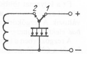Egyenletes körmozgás
Az olyan mozgást, amely közpályán történik, körmozgásnak hívjuk. Ha egyenlő idők alatt egyenlő utat tesz meg a test, akkor egyenletes körmozgásnak nevezzük.
Pl.: körhinta
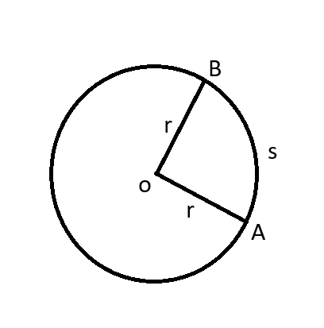r - sugár (m)
s - körív hossza (m)
Periódusidő(keringési idő), frekvencia(fordulatszám)
A periódusidő egy teljes kör megtételéhez szükséges idő.
A frekvencia pedig azt mutatja meg, hogy 1 sec alatt mennyi a fordulatok száma.
f - frekvencia (s-1 vagy Hz - Hertz)
A periódusidő és a frekvencia egymásnak a reciproka.
T = 1 és f = 1
fT
Kerületi sebessség
A sebességet úgy számítjuk ki, hogy az utat eelosztjuk az idővel.
v = út = 2 * 𝝅 * r
időT
mivel 1 = f
T
v = 2 * 𝝅 * r * f
A kerületi sebesség vektormennyiség, amely mindig erintő irányú.
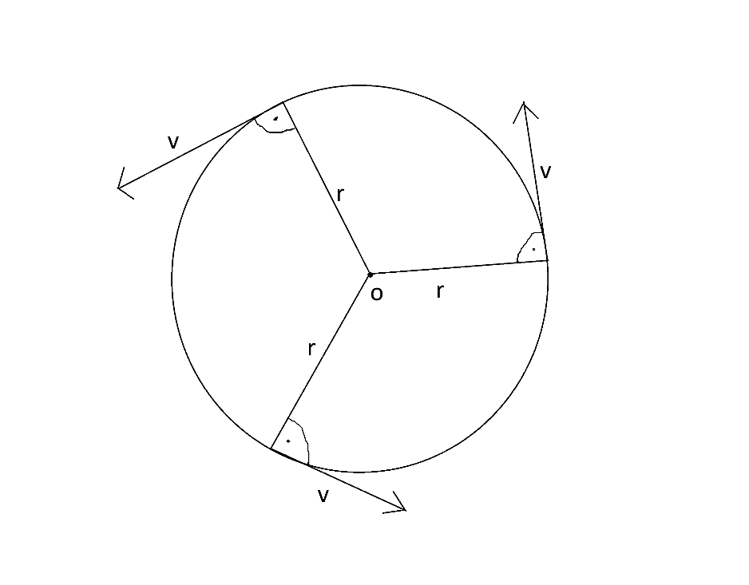Szögsebesség
A sebesség nem más, mint időegység alatti szögfordulás.
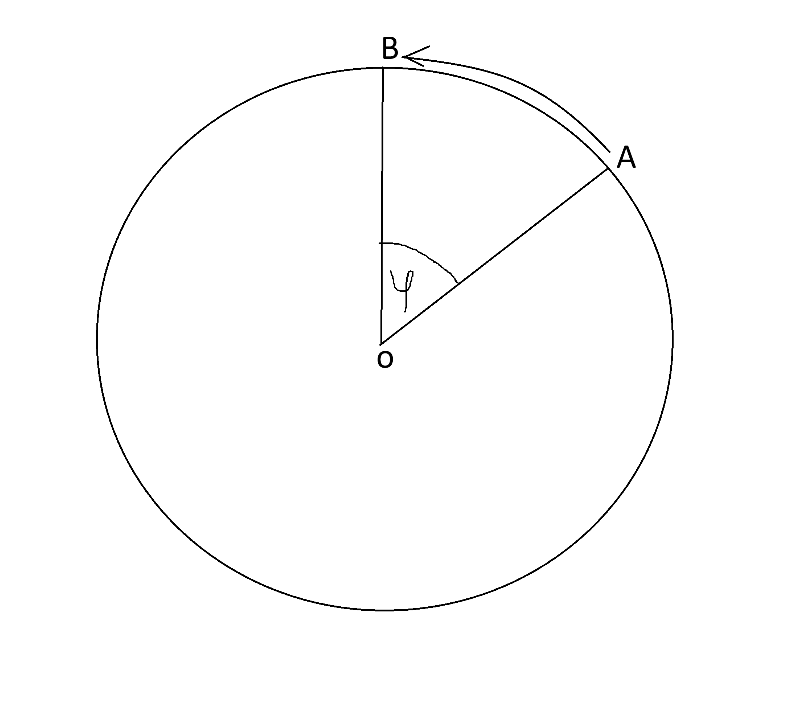A szögsebességre érvényes: ω = 2 * 𝝅 és 2 * 𝝅 * f
T
A kerületi sebességre és szögsebességre a következő össszefüggés érvényes.
v = 2 * 𝝅 * r = 2 * 𝝅 * r * f
T
ω = 2 * 𝝅 = 2 * 𝝅 * f
T
v = ω * r
ϕ - szögelfordulás
T - periódusidő (s)
f - frekvencia (Hz)
v - kerületi sebesség (m/s)
r - sugár (m)
Centripetális gyorsulás
A centripetális gyorsulás mindigg a fforgásközéppont felé mutat.
acp = v * ω
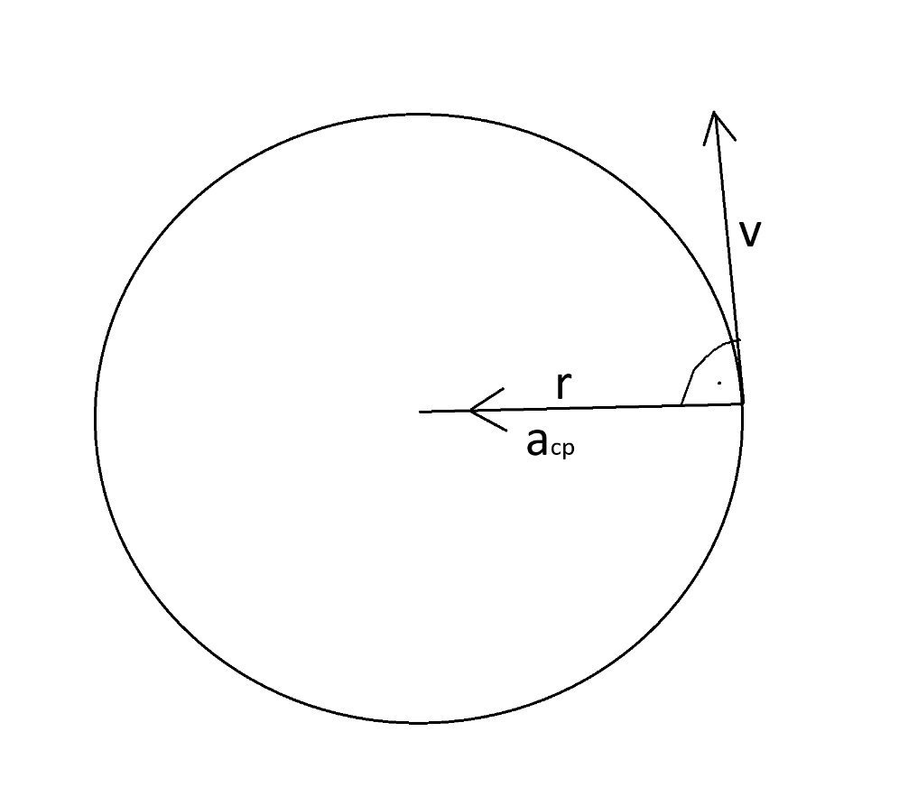A rezgőmozgás
Rezgésnek nevezzük minden olyan fizikai jelenséget, amely az időben szakaszosan (periodikusan) ismétlődik.
Rezgés például a rugóra akasztott test mozgása, az inga mozgása, illetve a váltóáram is periodikus lefolyású.
A rezgések legegyszerűbb fajtálya a harmonikus rezgés (mechanikai rezgés).
A harmonikus rezgést az jellemzi, hogy a kitérés az időnek a szinuszfüggvénye. A mozgás grafikunja egy szinuszgörbe.
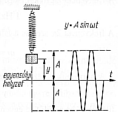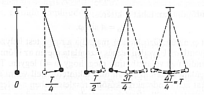
Amplitúdó és pillanatnyi kitérés
Az amplitúdó jele az "A" és maximális kitérést jelent.
A pillanatnyi kitérés jele pedig az "y".
y = A * sin 360 * t
T
A - maximális kitérés (m vagy cm)
T - periódusidő (s)
t - pillanatnyi kitérés ideje (s)
A rezgőmozgás kinematikája
pillanatnyi kitérés:
y = A * sin ω t
sebesség:
v = A * ω * cos ω t
gyorsulás:
a = A * ω2 * sin ω t
Matematikai inga
Galileo Galilei
Kis tömegű fonálra felfüggesztett testet matematikai ingának nevezzük.
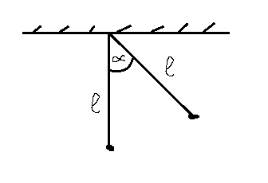α - kis szög (5°-tól kisebb)
T - periódusidő (s)
T = 2 * 𝝅 * √ l
g
Hullámtan, mechanikai hullámok
Abban az esetben, ha figyelembe vesszük azt is, hogy rezgőmozgáskor a testek pontja hatást gyakorol a test szomszédos pontjára is, akkor hullámmozgázsról beszélünk.
Két féle hullámmozgást ismerünk:
- transzverzális
- longitudinális
A transzverzális hullámzást másnéven keresztirányú hullámzásnak is hívjuk, és a részecskék rezgésének az iránya merőleges a terjedési irányra.
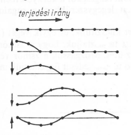A longitudinális hullámokat hosszmenti hulláoknak is hívjuk. Itt a részecskék rezgésének iránya megegyezik a terjedési iránnyal.
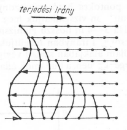Az útképlethez hasonló képlettel fogjuk a hullámhosszot kiszámolni.
s = v * t
Itt is érvényes, hogy a periódusidő és a frekvencia egymásnak a reciproka.
Hullámegyenlet
y = A * sin 2 * 𝝅 *( t - x )
Tλ
A hullámegyenlet a haladó hullám térbeli és időbeli elhelyezkedését írja le.
Visszhang
A hang terjedési sebessége a levegőben 340 m/s. A fülünk 0,1 secundumos időkülönbséget tud észlelni.
s = v * t
s = 340 m/s * 0,1 s
s = 34 m
Ezért a felületnek amiről a hang visszaverődik 17 méterre kell lenni a fülünktől.
A hanghullámok terjedéséhez rugalmas közegre van szükség, pl.: levegő.
Rugalmatlan anyagok pl.: függöny, posztó rossz hangvezetők, maásnéven hangszigetelők. Légüres térben nem terjed a hang. A hallható hangoktól alacsonyabb frekvenciájú hangot infrahangnak nevezzük. Ezek a 15 Hertztől alacsonyabb hangok. A dekfinek és a cetek kommunikálnak így. Tengeri mélységel vizsgálata is infrahanggal történik.
A hallható hangokon túli hangok az ultrahangok. Ezek kb 15 000 Hertznél kezdődnek. A kutyasípok szólnak ilyen hangon, illetve orvosi berenddezéseknél használjuk. Az emberi beszédhang 80 és 1300 Hertz közötti. Zenében 32 és 6000 Hertz közötti tartományt használnak. A zenében az alaphangot 440 Hertznél határozzák meg.
Doppler jelenség
Doppler - 19. század - osztrák fizikus
A nagy sebességgel közeeledő vonat sípját, illetve az aotó szirénáját magasabbnak érezzük ha közeledik, és mélyebbnek ha távolodik. Ez a jelenség nem csak hangra, hanem bármilyen hullámra érvényes.
f = f0 * c ± m
c ± v
c - a hang terjedési sebessége (m/s)
m - megfigyelő mozgási sebessége (m/s)
v - hangforrás mozgási sebesságe (m/s)
f0 - a hangforrás által kiadott hang frekvenciája (Hz)
A - a koóözeledésre, a + a távolodásra vonatkozik.
A váltóáram (váltakozóáram)
A váltóáram keletkezése
Homogén (állandó) mágneses térben forgassunk egyenletesen egy vezetőkeretet. Homogén mágneses térben, egyenletesen forgó vezetőben az indukált feszültség, illetve áramerősség a szögelfordulás szinuszával egyenesen arányos. (Emlékezzünk vissza a harmonikus rezgés pillanatnyi kitérésére: y = A * sin ω * t)
u = U0 * sin ω * t
U0 - maximális feszültség (V)
i = I0 * sin ω * t
i0 - maximális áram (A)
A váltóáram frekvenciája nálunk 50 Hz. Ez azt jelenti, hogy a szinuszgörbe 50x fordul körbe másodpercenként, ami 100 maximumot jelent. Nálunk a hálózati feszültség 230 Volt. A maximális feszültségérték U0 = (√2 * 230) V = 325 V
~ - váltóáram (AC)
= - egyenáram (DC)
A váltóáram hatásai
- A váltóáram hőhatása az egyenáraméval megegyező (gondoljunk például a vezetékek felmelegedésére).
- A váltóáram az elektrolitokban vegyi átalakulást nem okoz, mert a polusok gyors feszültségváltozásait az ionok nem tudják követni.
- A váltóáram mágneses tere az áram irányának megfelelően időben váltózó.
A váltóáram teljesítménye
Teljesítmény (Watt):
P = W
t
Munka (Joule):
We = Q * U
Áramerősség (Amper):
I = Q
t
U - feszültség (Volt - V)
P = U * IㅤEz az összefüggés az egyenáram teljesítményére vonatkozik.
Váltóáram esetén: p = i * i (indukált, pillanatyni értékekre vonatkozik)
Ha az áram és a feszültség nincs fázisba:
ϕ nem 0°, akkor a teljesítményre és a munkavégzésre érvényes (váltóáramnál az effektív értékekkel számolunk).
A váltóáram teljesítménye:
p = u * i * cos ϕ
A váltóáram munkavégzése:
W = U * I * t * cos ϕ
A villamos gépek
Azok a mágneses hatáson alapuló berendezések, amelyek mechanikai energiából villamos energiát állítanak elő a: generátorok, vagy villamos energiából mechanikai energiát, azok a: motorok.
A forgó villamos gépek két részből állnak:
- forgó rész (rotor) - mágnes vagy elektromágnes
- álló rész (sztator) - tekrecs
Generátorok
- Alternátor- mozgási energiából elektromos energiát, váltakozó feszültség
- Egyenáramú generátor - egyenirányítja a váltakozó áramot
- Dinamó - az elektromágnest nem külön áramforrással táplálják, hanem ezt is maga a dinamó táplálja - az öngerjesztés elve
Feltalálója: Jedlik Ányos - 19. század - magyar fizikus
Motorok
- Szinkronmotor - a belevezetett váltóáram frekvenciája megegyezik a forgó rész frekvenciájával. Legnagyobb előnyük az állandó fordulatszám.
- Aszinkronmotor - nincs szinkronban az előbb említett két frekvencia - nem állandó a fordulatszám. Ebben a két motorban közös, hogy legtöbbször mindkettő háromfázisú.
- Egyenáramú motor - egyenáramú generátor (a villamos energiát mechanikai energiává alakítja)
Transzformátorok
A transzformátor lényegében egy közös vasmagon elhelyezett két tekercs.
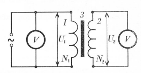U - feszültség (Volt - V)
Ha szekundtekercs menetszámát elosztjuk a primértekercs menetszámává (Ne:N1), akkor megkapjuk a transzformátor áttételét.
Kettő esetet különböztetünk meg.
- Ha p = N2 > 1,
N1
akkor feltranszformálásról beszélünk. Így működnek a röntgenberendezések. - Ha p = N2 < 1,
N1
akkor letranszformálásról beszélünk. Így működik a telefontöltő.
Az erőművekben ,,termelt" 10kV - 15kV feszültséget először feltranszformálják, majd több lépésben vissza letranszformálják.
Erőmű: 10 000 V - 15 000 V
↓ feltranszformálja
Vezetékekben: 100 000 V - 150 000 V
↓ letranszformálja
Épületek: 220 V - 240 V
Szállítás közben fellépő veszteségeket kétféle képpen csökkenthetjük:
- R = ρ * l
A
↓
a vezeték ellenállásának csökkentésével
↓
a keresztmetszet megnövelésével. Ennek hátránya, hogy több oszlop kéne - p = U * I = R * I2
↓
az áramerősség csökkentésével, ami a feszültség növelését jelenti
↓
feltranszformálás => magas feszültség
A transtformátor két tekercsének menetszáma úgy aránylik egymáshoz, mint a tekercsek feszültségei.
primér tekercs: N1, U1
szekundér tekercs: N2, U2
N1 = U1
N2U2
A transzformátoroknál érvényes az energiamegmaradás törvénye, ami azt jelenti, hogsy a transzformátorokban a primér és szekundér tekercsben a teljesítmény megegyezik.
Teljesítmény: p = u * i
primér teljesítmény = szekundér teljesítmény
U1 * i1 = U2 * i2
Elektromágneses hullámok
Helyezzün kegy áramkörbe kondenzátort és tekercset, majd a kondenzátor lemezeit nyissuk szét. Ekkor az elektromos tér kiszabadul a környezetbe és egy periódusosan változó elektromos és mágneses teret kapunk pl.: rádióhullámok, TV hullámok, mobiltelefonok
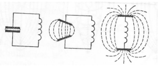Amíg a frekvencia 50 Hz körüli (max 100 Hz), addig elektromágneses rezgésekről beszélünk pl.: váltakozó áram. Nagyobb frekvencia esetán (107Hz - 1027Hz) viszont elektromágneses hullámokról beszélünk. Elektromágneses hullámzás esetén elektromos és mágneses energia tejed egyszerre, amit elektromágneses energiának nevezünk. A terjedési sebessége az elektromágneses hullámoknak a fény terjedési sebességével egyezik meg.
c = 300 000 km/s = 300 000 000 m/s = 3*108m/s
c - fény terjedési sebessége
Az elektromágneses térelméletet egy 19. században élt angol fizikus alkotta meg: Maxwell. Az elektromágneses hullámok elektromágneses spektrumot alkotnak.
- váltóáram: 50 Hz
- rádióhullámok: 107Hz
- infravörös hullámok: 1012Hz
- látott fény: 1014Hz
- ultraibolya hullámok: 1016Hz
- röntgensugarak: 1018Hz
- radioaktív sugarak: 1020Hz
- kozmikus sugarak: 1024Hz
Az elektromágneses hullámok (sugarak) frekvenciájára és hullámhosszára érvényes a következő összefüggés:
frekvencia * hullámhossz = fény terjedési sebessége
f*λ=c
λ - hullámhossz (m)
c - fény sebessége (3*108m/s)
Hírközlő rendszerek
A mindennapi életben gyakran kell átvinni hangot, képlet nagy távolságokra. Ezeket elektromágneses hullámok segítaségével valósíthatják meg a hírközlő rendszerek.
Mikrofon - a hanghullám energiáját elektromos energiává változtatja. Ez egy elektroakusztikai átalakító.
Erősítők - a feszültség erősítésére szolgálnak.
Kódolás (moduláció) - a hanghullámot bagyfrekvenciás vivőhullámra ültetik rá.
Dekódolás (demoduláció) - a hanghullámok leszedése a vivőhullámokról.
Hangszóró (reproduktor) - az átvitt akusztikai jel elektromos energiát alakítja vissza hangenergiává. Ez szintén egy elektroakusztikai átalakítás.
Fényytan, optika
A fény az energiának egyik fajtája. A fény kettős (duális) természetű. Viselkedhet úgy mint hullám, illetve mint részecske. Először a hullám természetével fogunk foglalkozni (fényvisszaverődés, fénytörés). Utána pedig a részecskével fogunk foglalkozni (fotonok).
A fény elektromágneses hullám, amely transzverzálisan terjed. A fény terjedéséhez nincs szükség közegre, míg a hanghullám terjedéséhez szükséges a levegő.
A fényforrásokat két nagy csoportra osztjuk:
- Természetes fényforrások (saját fényük van)
pl.: csillagok, izzó, tábortűz - Mesterséges fényforrások
pl.: hold, óralap, tükör
A fénysugarak egyenes vonalban terjednek, leggyorsabban vákumban (3*108m/s). Minden más közeg fékezi a terjedését.
Az optikát 3 szempont szerint szokás tárgyalni:
- Geometriai optika (fényvisszaverődés, fénytörés)
- Fénytani eszközök (nagyító, fényképező, távcső)
- Fizikai optika
Geometriai optika
Fényvisszaverődés
Ha a fénysugarak két közeg határához ér egy része elnyelődik, másik része visszaverődik.
pl.: víz széléről a fény visszaverődik
a víz esetén egy része megtörik
A fényvisszaverődést tükrös visszaverődésnek is nevezzük.
Két törvény érvényes rá:
- A belső fénysugár, a visszavert fénysugár és a beesési merőleges egy síkban vannak.
- A beesési szög és a visszaverődési szög megegyezik
β - visszaverődési szög
α = β
Síktükrök
Síktükröket hsználunk pl.: fodrász és közmetikai szalonokban, fürdőszobában, előszobában, zsebtükrökhöz, periszkópokhoz, macskaszemhez, mérőműszerekhez.
A síktükrök mindig egyenesállású, a tárggyal megegyező nagyságú képet adnak. A síktükrökben a bal és a jobb oldal felcserélődik. A síktükrök képszerkesztése megegyezik a tengelyes tükrözéssel.
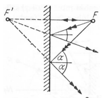Gömbtükrök
Ha a tükröző felület nem sík, akkor gombtükörről beszélünk.
A gömbtükröknek két fajtája van:
- homorú gömbtükrök
- domború gömbtükör
r = 2 * f
f = r
2
F - fókuszpont vagy gyújtópont
G - görbületi küzéppont
f - fókusztávolság
r - görbületi sugár
Homorú tükröket használják fogászati rendelőkben, illetve autóban a fényszóró előtti tükör.
Domború tükröket használnak beláthatatlan kanyaroknál, útkereszteződésekben, illetve az autók visszapillantó tükrében is.
A homorú tükröknél a kép lehet nagyított vagy kicsinyített, illetve egyenes állású vagy fordított állású.
A domború tükröknél mindig egyenes állású kicsinyített képet kapunk.